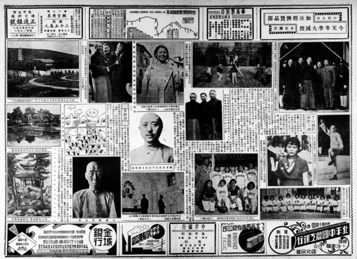

世界畫報 1935年第518期：石像 滕白也雕
访问原网页 ↗Visit original website ↗

S038 · 世界画报社；国家图书馆扫描，Commons提供 · 1935
第2个PDF页面左下有胸像照片及署名，是同期雕塑图像证据。The second PDF page includes a bust captioned as a stone sculpture by Teng, providing a contemporary image record.
馆藏图像与原文Archived images and documents

来源页摘录Source-page excerpt
File:NLC404-00J005679-107449 世界畫報 1935年第518期.pdf - Wikimedia Commons
…女子籃球冬賽之財商隊 繼袁良任北平市長之秦德純 某教授 上海市民之自擾 石像滕白也雕 國民革命軍陣亡將士公墓之…
原始网址Original URL
https://commons.wikimedia.org/wiki/File:NLC404-00J005679-107449_世界畫報_1935年第518期.pdf